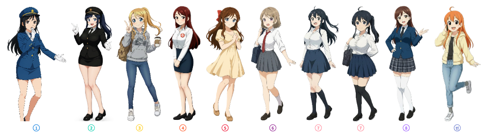

편의시설
효빈라커 (H-Locker) 안내
무거운 짐은 안전하게 맡기고 가볍게 이동하세요. 효빈도시철도 전 역사에서 스마트 물품보관함을 운영합니다.
1. 효빈라커 (H-Locker) 소개
효빈라커(H-Locker)는 OTP(일회용 비밀번호)와 스마트폰 전용 앱(HB Wave)을 연동하여 열쇠 분실 걱정 없이 안전하고 편리하게 이용할 수 있는 효빈교통공사의 무인 물품보관 서비스입니다. 과거 동전 교환기로 인한 불편함을 해소하고자 전면 스마트화 되었습니다.
효빈라커 공식 앱 (HB Wave) New
도착 전 라커 사전 예약, 빈자리 실시간 조회, 간편 결제 및 QR코드 0.5초 스캔 개방까지 앱 하나로 완벽하게 해결하세요!
2. 이용 요금 및 보관함 규격
보관함의 크기에 따라 요금이 차등 적용됩니다. 기본요금은 4시간 기준이며, 4시간 초과 시 시간당 추가 요금이 누적 부과됩니다. (결제수단: 신용/체크카드, 효빈덕북교통카드, 간편결제)
| 크기 | 사이즈 규격 (W×H×D) | 기본 요금 (4시간) | 추가 요금 (1시간당) |
|---|---|---|---|
| 소형 (S) | 450 × 300 × 600 mm (서류가방, 소형 쇼핑백 등) |
2,000원 | 500원 |
| 중형 (M) | 450 × 450 × 600 mm (백팩, 기내용 소형 캐리어 등) |
3,000원 | 800원 |
| 대형 (L) | 450 × 900 × 600 mm (대형 화물용 캐리어, 코스프레 소품 등) |
4,000원 | 1,000원 |
3. 보관 금지 물품 및 유의사항
안전한 역사 환경과 위생 관리를 위해 아래의 물품은 라커 보관이 엄격히 금지됩니다.
고가품 및 귀중품
현금, 유가증권, 보석류 및 100만 원 이상의 고가품 (분실 시 당사 면책)
위험/인화성 물질
화약류, 가연성 가스, 신나, 총기류 등 철도안전법 위반 물품
동식물 및 부패성 식품
살아있는 동물, 악취가 나거나 부패하기 쉬운 음식물 (적발 시 즉시 폐기)
4. 상세 이용 방법 (앱 / 키오스크)
- 앱에서 현재 역 검색 후 사용 가능한 빈 라커함 예약 및 결제 (결제 완료 시점부터 최대 1시간 예약 유지)
- 해당 라커 앞에 도착하여 앱의 'QR코드 열기' 버튼 터치
- 라커 중앙 스캐너에 스마트폰 QR코드를 인식
- 인식 0.5초 만에 문이 개방되면 물품 보관/수령 후 문 닫기
- 키오스크 터치 화면에서 '보관' 또는 '찾기' 버튼 터치
- 사용할(혹은 보관 중인) 보관함 번호(파란색 불빛) 선택
- 비밀번호 6자리 입력 (보관 시 신규 설정, 찾기 시 기존 입력)
- 휴대폰 번호 입력 및 신용/체크/교통카드 결제
- 문이 개방되면 물품 보관/수령 후 문을 끝까지 강하게 닫기
5. 특별한 효빈라커 (나인스타즈 래핑)

레일루미네(railumine) 래핑 라커룸 성지
효빈교통공사의 '덕업일치' 행정의 일환으로, 각 노선을 상징하는 거점 역사에는 도시철도 공식 마스코트 '레일루미네' 전신 일러스트가 래핑된 특별한 대형 보관함이 설치되어 있습니다.
📍 캐릭터 래핑 주요 위치:
1호선 창선역 (고나미), 2호선 고송교차로역 (하루빈), 3호선 청엽구청역 (박라미), 4호선 오석역 (다로나), 5호선 소조역 (미소하), 6호선 중수역 (라세나), 7호선 어간중앙역 (임세정/임세하), 8호선 곽산역 (유리아), 빈효선 효빈항역 (전노아)
※ 팬들에게는 굿즈로 장식한 '이타백(痛バッグ)'을 올려두고 기념사진을 남기는 필수 성지 순례 코스로 사랑받고 있습니다.
6. 자주 묻는 질문 (FAQ)
[TMI] 효빈라커를 둘러싼 도시 괴담과 로어
-
HAF 시즌, 대형 라커 '수강신청' 대란: 매년 아시아 최대 축제인 HAF(효빈 애니메이션 페스티벌) 기간이 되면 행사장 인근인 고송교차로역이나 중수역의 대형(L) 라커는 코스어들의 거대한 무기 모형이나 짐을 보관하기 위해 앱 예약이 열리자마자 1초 만에 마감되는 헬게이트가 열립니다. 이 시즌엔 당근마켓에서 대형 라커 예약권을 웃돈 주고 양도하는 기현상까지 벌어집니다.
-
방치된 네소베리의 슬픈 최후: "5일 방치되어 유실물센터로 넘어가는 물품 1위가 놀랍게도 '메가 점보 네소베리(대형 봉제인형)'입니다." 굿즈샵 오픈런으로 인형을 잔뜩 사재기해 놓고 라커에 보관했다가, 뒷풀이 회식 후 만취하여 까맣게 잊어버리는 뼈아픈 사례가 속출하기 때문입니다. 라커룸에 억지로 구겨 넣어진 네소베리를 구출하는 것은 역무원들의 주요 일과입니다.
-
박라미 라커의 무서운 저주: 효빈대학교 학생들 사이에서는 중간고사 기간에 3호선 청엽구청역에 있는 '박라미 래핑 라커'에 전공 서적이나 과제물을 보관하면, 신형 전동차 구경 가느라 수업을 째고 전공 F를 맞았던 박라미의 기운을 받아 그 과목에서 F학점을 맞게 된다는 끔찍한 도시 괴담이 전해 내려옵니다. 근데 기계과 천재 임세하 라커에 넣어도 똑같이 F 맞는다. 그건 그냥 공부를 안 한 거다.
-
래핑 훼손 시 '무관용 금융치료': 과거 특정 혐오 세력이 라커에 래핑된 라세나 주임 얼굴에 매직으로 악의적인 낙서를 하는 테러를 저질렀습니다. 하지만 라커룸 주변을 비추는 스마트폴 CCTV망에 즉각 검거되어, 특수재물손괴죄 형사 고발 및 수백만 원대 복구비용 청구로 완벽한 금융치료를 당했습니다. "우리 마스코트 얼굴에 스크래치를 내면 가만두지 않겠다"는 공사의 엄정한 의지입니다.